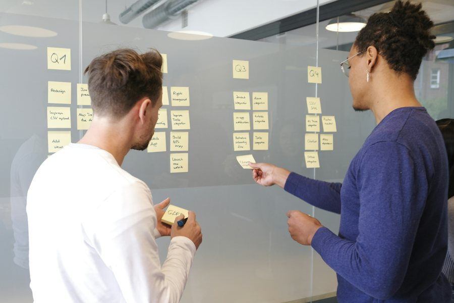
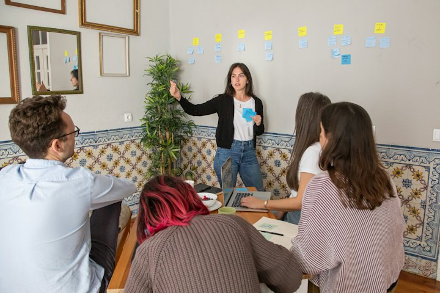
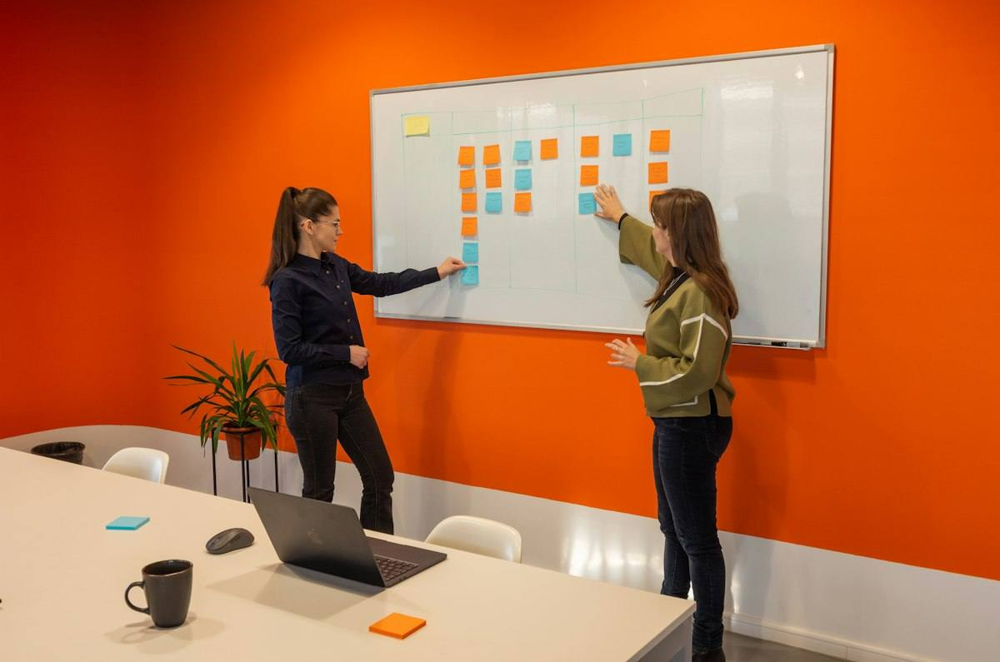
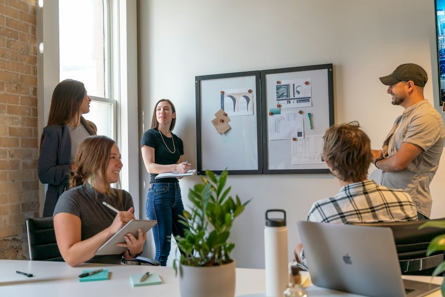

Warm-up · Where do we start?

Three problems from a plant. Pick the first step you trust most. Then say it out loud and say why.
Pick it, then say it
Said 0 / 3Teacher notes · §1 Warm-up
Pedagógica
- Tres problemas de planta con tres puntos de partida posibles cada uno. No hay respuesta única. El alumno toca su elección y DICE I pick …, because …; después ve una nota sobre qué costo o beneficio tiene esa elección. Todavía no presentes We could: escucha qué usa por instinto (I think we must / we can / maybe).
- Línea del desacuerdo: unos dicen que se empieza por el problema más grande; otros dicen que se empieza por lo que se puede lograr esta semana. No resuelvas: es el motor de la sesión.
- Máximo 4 minutos. Tema: Seguro (casos ficticios, nada personal). Temperatura: Mild. Prueba del micrófono apagado: el botón solo cuenta después de que el alumno elige y dice.
Engagement
- "Elige uno. No hay respuesta correcta." Pide la razón antes de mostrar la nota.
- Cierra en voz alta con la frase del recuadro verde.
Crecimiento
- Anota con qué verbo expresa la sugerencia (must / can / I think / maybe): línea base para §3.
- Riesgo: Seguro. Temperatura: Mild.
Vocabulary · 12 words to suggest a start

Tap to flip · listen to the word and the example
0 / 12 flippedHear a situation. Say what you would say. Mark the chunk you used
Lines 0 · Chunks 0 / 91. Draw a situation. 2. Say what you say in that moment, out loud. 3. Tap the chunk you used. It is yours now. 4. Three in a row is a line. The same chunk fits more than one situation: use a different sentence each time.
Teacher notes · §2 Vocabulary
Pedagógica
- Voltea cada tarjeta: tú dices la palabra, el alumno repite y da su ejemplo. Palabras difíciles: bottleneck (BOT-l-nek), pilot (PAI-lot), trial (TRAI-al), roll out (ROUL aut, dos palabras). We could … y How about …ing? son patrones y se enseñan completos.
- VOC-05 Collocation Bingo (COLECCIÓN): tablero de 9 chunks. Se saca una situación (sin el chunk a la vista), el alumno DICE lo que diría y toca el chunk que usó. Tres en línea es bingo. Un chunk solo se marca después del I said it. Se vuelven a ver las 9 situaciones para recuperar el mismo chunk con otra oración.
- escalation_note (la dinámica vuelve de S8): en S8 el bingo se llenaba con chunks que se reconocían en una tarjeta. Ahora el chunk se recupera hablando desde una situación, sin la palabra a la vista, y no hay una sola respuesta: se vale cualquier chunk que justifique.
- Si el alumno marca un chunk sin decirlo, pídele que repita la situación y la diga. Aviso: pilot, trial y start small se parecen; el alumno debe decir por qué usó cada uno.
Engagement
- "No leas el chunk: dilo y después márcalo."
- Cierra en voz alta: "I got __ lines. My best sentence was …"
Crecimiento
- Anota qué chunks marcó sin dudar y cuáles evitó: es el léxico activo real.
- Venta: cualquier curso puede usar el bingo con las situaciones de su planta.
Grammar · We could … · Could we …?
Read the chat. Find four ways to suggest or ask for a start. Say them out loud.
The line has three problems. We could start with the changeovers.
How about starting with training? It takes two months.
Okay. Could we try it for a week?
Yes. And we could also measure the time.
We could … · Could we …? · How about …ing?
1 · Suggest
We could start with the checklist.
2 · Add another
We could also train the night shift.
3 · Ask
Could we try it for a week?
| Statement, negative, question | Notice | |
|---|---|---|
| + | We could start with the changeovers. We could also test it on nights. | could + the base verb. A suggestion is an option, not an order. |
| − | We can’t fix everything this month. We could start with one thing. | Say the limit with can’t, then the idea with could. |
| ? | Could we try it for a week? What could we do first? How about starting small? | Could we + verb? What could we + verb? How about + -ing? |
Never: could to start · could starting · we could to try. After could, use the base verb. Use it to put an option on the table and invite the other person to decide.
¿Qué es? La forma de sugerir una opción sin ordenarla: We could + verbo. Con Could we …? pides permiso o propones probar algo, y con How about + -ing ofreces otra idea.
¿Cómo se usa? Después de could va el verbo sin to y sin -ing: We could start. Para agregar otra idea: We could also …. Para el límite, can’t; para la idea, could.
¿Para qué hoy? Para decir por dónde empezar, con una razón, y pedir una prueba corta.
Cuidado: no se dice could to start ni could starting. Y could aquí es sugerencia, no pasado.
Which message gets the start? Pick it, then say it
Buy the good messages. Say them. Fix the bad ones out loud
Bank 100 chips1. You have 100 chips. Read the message. 2. Bid 10, 20 or 30 and press Buy, or press Pass. 3. A good message: say it out loud and collect double. 4. A message with an error: you lose your bid, but say the fixed version out loud and get half back.
Your plant. Your problem. Say where we could start
Said 0 / 31. Choose a real problem from your week. 2. Say it, then say where we could start and why. 3. End with “Could we try it for a week?”. 4. At the end, ask your partner: “What could we do first?” and listen for a true answer.
Mistakes at this level
Teacher notes · §3 Grammar
Pedagógica
- Un solo punto: We could + verbo para sugerir un punto de partida (con We could also, Could we …? y How about …ing? como apoyos). Primera sesión de Block 3, donde could/should están permitidos; aquí could es SOLO sugerencia (no habilidad en pasado, no hipótesis, no would). Explicación continua ≤5 min; el botón en español está oculto por defecto.
- Practice A (mecánica, controlada) = decide y dilo: tres casos, cada uno con tres mensajes completos y correctos; solo uno logra el resultado. El alumno decide y lo dice en voz alta. Máximo 1/3 del bloque.
- GRM-03 Sentence Auction (SUBASTA), etapa meaningful: seis mensajes completos (tres buenos, tres con el error típico: could to start, could starting, how about to). El alumno apuesta fichas por los que cree buenos, los dice en voz alta y cobra el doble; el mensaje con error cuesta lo apostado, pero lo repara hablando y recupera la mitad. escalation_note (la dinámica vuelve de S10): en S10 la subasta era de oraciones sueltas; ahora cada lote es un mensaje real y solo se cobra al decirlo o repararlo en voz alta.
- Practice C (comunicativa): tres tarjetas con un problema propio; el alumno dice problema + We could start with … + razón + Could we try it for a week? Cada tarjeta lleva casillas de autochequeo. Límites: sin would ni hipótesis (S25), sin should como sistema, sin reported questions, sin negociación compleja. Sin ejercicios de hueco.
Engagement
- "No leas el mensaje: dilo." En la subasta, el que compra sin decir no cobra.
- En Practice C, si el alumno dice I think we must, acepta y pídele una variante con could.
Crecimiento
- Anota cuántas de las tres tarjetas usaron We could + verbo sin ayuda: línea base para S18.
- Venta: sugerir sin imponer es la habilidad que más piden los supervisores recién ascendidos.
Listening · Predict, listen, pass on the plan
Shift change. Hye-jin, an improvement engineer, and Oliver, a shift supervisor, can only start with ONE problem on Line six. First you predict and bet. Then you listen. Then you pass on the plan.
Lock your bet to unlock the play button. Practice audio: your browser voice (not a real accent).
What will they decide first? Bet chips, then check
Chips 3Line six has three problems: slow changeovers, setup mistakes by new operators, and late material. Choose your prediction and bet 1, 2 or 3 chips on it. Say your prediction out loud: “I think they could start with …, because …”. You win your bet if you are right and lose it if you are wrong.
Oliver must tell the night team the plan. Which message do you pass on?
Now tell the plan in your own words. 30 seconds, no script
The script (Line six, shift change)
Hye-jin · Korean-accented English · female · improvement engineer, clear, calm, natural pace | Oliver · British English (northern England) · male · shift supervisor, direct, friendly, natural paceListen · repeat · record your best
Teacher notes · §4 Listening
Pedagógica
- LIS-05 Predict and Score (APUESTA): antes de oír, el alumno predice qué problema eligen primero, lo dice en voz alta con una razón y apuesta de 1 a 3 fichas. El audio se desbloquea al bloquear la apuesta. Después puntúa: gana lo apostado si acertó. La predicción es el insumo, no una pregunta de comprensión. escalation_note (la dinámica vuelve de S2): en S2 bastaba predecir y puntuar; ahora la predicción se dice en voz alta con una razón antes de poder oír. Task 2 es la única pregunta de idea general: decide y pasa el recado (sin preguntas literales de detalle con opciones). Task 3: el alumno cuenta el plan en 30 s sin guion.
- Guion: 188 palabras (tope ~200; B2 admite hasta 300), 2 hablantes. Contiene We could cuatro veces, Could we una, How about starting una, y el léxico quick win, first step (por contexto), low risk, bottleneck (por contexto), changeover, checklist, trial por contexto. Sin would, should ni hipótesis.
- Para grabar (14 clips, uno por línea): Hye-jin = inglés con acento coreano, mujer, calmada, ritmo natural · Oliver = inglés británico del norte de Inglaterra, hombre, directo y amable. Cumple el mínimo de acento no nativo del programa (Hye-jin). Confirmar con un clip de muestra que la voz elegida da el acento de forma confiable.
- Clave: Task 1 (predicción): los changeovers. Task 2 (idea general): el mensaje que dice que se empieza por los changeovers con un checklist probado una semana en el turno de noche, que el entrenamiento espera y que se anotan los tiempos. Los otros dos mensajes invierten el orden o piden arreglar todo.
Engagement
- "Primero predice y apuesta. Después escuchas." El audio no se desbloquea sin apuestas.
- Si el alumno falla ambas apuestas, no corrijas: pídele que diga qué pista del audio lo habría llevado a la respuesta.
Crecimiento
- "In the speaking block you put options on the table and eliminate them, so listen for the reasons."
- Registra qué razón dijo en la predicción y si usó could.
Speaking · Three chips: put it on the table, cut it down

1. Draw a problem. 2. Each person puts up to three options on the table: “We could start with …”. 3. Eliminate options one by one. Every cut needs a reason with “because”. 4. The boss changes the rules. Does your start survive?
1:1: you and the teacher put options on the table together.
Draw a problem for your team
Points 0Say “We could start with …” and add your option
On the table 0 / 6Eliminate with a reason. The last one stands
Press “Cut” next to an option, say your reason, then confirm.
“No budget this week.” Does your start survive? Say it in 20 seconds. If it does not, bring one cut option back and defend it with “How about …ing?” or “We could also …”.
12 questions · always 2 follow-ups
Teacher notes · §5 Speaking
Pedagógica
- SPK-04 Three Chips (ELIMINACIÓN): un problema al azar; cada persona pone hasta tres opciones sobre la mesa diciendo We could start with …. Después el equipo elimina opciones una por una; cada eliminación exige una razón con because dicha en voz alta (el botón de confirmar solo aparece al declarar). Queda UNA. Con 1:1 tú pones opciones junto con el alumno. escalation_note (la dinámica vuelve de S3): en S3 solo se repartían tres fichas de turno; ahora las fichas son opciones reales que se eliminan con razones hasta quedar una, y hay una condición nueva.
- Segunda toma con condición nueva: el jefe dice "no budget this week". El alumno dice 20 s si su opción sobrevive; si no, recupera una opción eliminada y la defiende con How about …ing? o We could also.
- Puntaje: +5 por opción dicha y puesta en la mesa, +4 por eliminación con razón, y cada casilla marcada vale 1 punto; la condición suma 2. Cuenta lengua producida, no velocidad. Entre pasos usa las 12 preguntas del mazo (~3 min). Tema: Seguro.
- Frases de rescate visibles: We could start with … · Let’s cut … because … · How about …ing? · Could we try it for a week?. Usarlas cuenta a favor.
Engagement
- "Una opción por ficha. Nadie corta sin razón." Si una persona domina, el primero en cortar es quien menos habló.
- Cierra con el resultado en voz alta: opción ganadora, puntos y si sobrevivió al presupuesto.
Crecimiento
- Registra si dice could en lugar de must al cortar y si da razones sin caer al español.
- Venta: eliminar con razón es exactamente lo que se hace en una junta de priorización.
Mission · The first step brief

The First Step Brief
You lead a small team. Your manager asks you three times this week: where do we start? For each case say the problem, where we could start and why, what could wait, and ask for a short trial.
Group: each case goes to one student in a breakout room. Your partner asks “Why that one first?” once per case. Rotate every 3 minutes.
1:1: you brief the teacher. The teacher asks “Why that one first?” once per case.
Success: 3 briefs, each with the problem, a start with “We could …” and a reason, what could wait, and “Could we try it for a week?”.
Choose one case. In 60 seconds, say what changes and where we could start now. No cards, no reading.
Teacher notes · §6 Mission
Pedagógica
- Marca cada movimiento solo cuando el alumno lo dice sin leer la tarjeta.
- Evidencia observable: nombrar el problema, We could start with … because …, qué puede esperar y Could we try it for a week?. La clave está en Teacher view. Es válido recordar If …, we’ll … (S12), el costo (S13) y instead of … -ing (S15).
- Segunda toma con condición nueva: sin presupuesto y solo una semana; 60 s sin mirar tarjetas. Esa toma es la evidencia individual sin apoyos: anota en el Registro si se logró.
- No interrumpas: el feedback va en §7. Las cifras de los casos son ficticias.
Engagement
- Anuncia: "__ of 12 moves."
- Si alguien solo describe el problema, pregunta "Where could we start?" una vez.
Crecimiento
- "In Session 18 you decide what to change first."
- Conecta con la tarea final: una conversación estratégica de 3–4 minutos donde recomiendas por dónde empezar y defiendes la decisión.
Wrap-up · Better the second time
✓ Success
↑ Upgrade
✎ Repair
↻ 2nd try
Repeat one brief with the teacher. Use the upgrades. Same task, better English.
60 seconds · pick the message, then say it
My second try is better because…
You can suggest where to start, with a reason, and ask for a short trial.
Homework: record a 60-second message for your manager: one problem at your plant, where we could start and why, and what could wait. End with “Could we try it for a week?”. Use We could … and How about …ing? Next: Session 18 · What Would You Change First?.
Teacher notes · §7 Wrap-up
Pedagógica
- Máximo 2 aciertos y 3 correcciones de alto valor, anónimas. Luego segundo intento de un brief de la misión contigo.
- Revisa los errores del punto: could to start, could starting, how about to. El cierre es oral: cada reactivo es "elige el mensaje y dilo".
Engagement
- Compara con el §1: "Minute 1: I pick … because …. Minute 58: We could start with … because …. Could we try it for a week?"
Crecimiento
- Registra: apuestas del §4, puntos del §5, si la toma sin apoyos de la misión se logró y las 3 tarjetas del §3.
- Antes de S18: pide que piense qué cambiaría primero en su área y por qué.